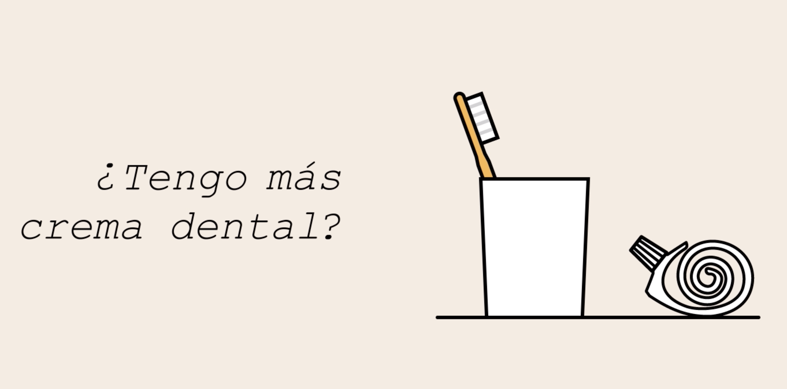
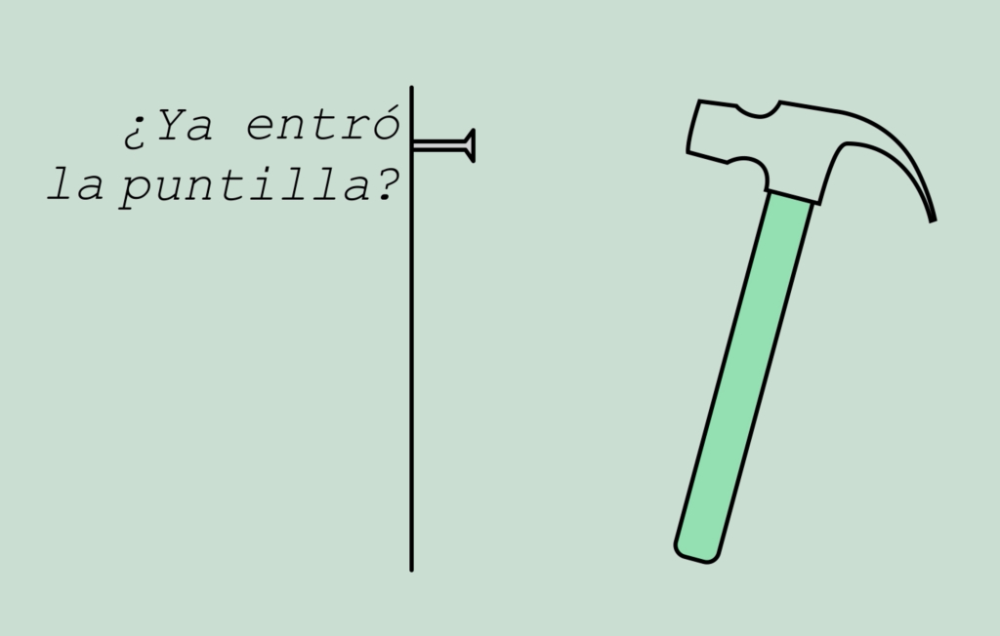

Este tipo de estructura, en lugar de seguir un orden específico de eventos, realiza una preguntar para determinar el camino a seguir.
Para entender mejor este concepto, veamos el siguiente caso: digamos que vas a cepillarte los dientes y notas que se acabó la crema dental. Ante este hecho te preguntarías: «¿tengo más crema dental?»
Si la respuesta es negativa, agregarías este artículo a tu lista de mercado. Pero, si la respuesta es afirmativa, simplemente la usarías.
Esta es la función básica de los condicionales: responder preguntas a partir de lo que descubren.
Así como los condicionales, los ciclos también realizan preguntas. La diferencia es que hacen la misma pregunta una y otra vez hasta que cierta tarea haya sido elaborada.
Por ejemplo, cuando clavas una puntilla en una pared. Aunque no lo notas, constantemente te preguntas: «¿ya entró la puntilla?».
Cuando la respuesta es negativa, martillas nuevamente y continúas repitiéndote esta pregunta hasta que la respuesta sea afirmativa y puedas parar.
Los ciclos te ayudan a programar tareas repetitivas, sin necesidad de hacer el mismo código una y otra vez, para la misma acción.